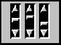

java.lang.Object
|
+----java.awt.Component
|
+----java.awt.Scrollbar
public class Scrollbar
extends Component
implements Adjustable
The Scrollbar class embodies a scroll bar, a familiar user-interface object. A scroll bar provides a convenient means for allowing a user to select from a range of values. The following three vertical scroll bars could be used as slider controls to pick the red, green, and blue components of a color:

Each scroll bar in this example could be created with code similar to the following:
redSlider=new Scrollbar(Scrollbar.VERTICAL, 0, 1, 0, 255); add(redSlider);
Alternatively, a scroll bar can represent a range of values. For example, if a scroll bar is used for scrolling through text, the width of the "bubble" or "thumb" can represent the amount of text that is visible. Here is an example of a scroll bar that represents a range:
The value range represented by the bubble is the visible range of the scroll bar. The horizontal scroll bar in this example could be created with code like the following:
ranger = new Scrollbar(Scrollbar.HORIZONTAL, 0, 64, 0, 255); add(ranger);
Note that the maximum value above, 255, is the maximum value for the scroll bar's bubble. The actual width of the scroll bar's track is 255 + 64. When the scroll bar is set to its maximum value, the left side of the bubble is at 255, and the right side is at 255 + 64.
Normally, the user changes the value of the scroll bar by making a gesture with the mouse. For example, the user can drag the scroll bar's bubble up and down, or click in the scroll bar's unit increment or block increment areas. Keyboard gestures can also be mapped to the scroll bar. By convention, the Page Up and Page Down keys are equivalent to clicking in the scroll bar's block increment and block decrement areas.
When the user changes the value of the scroll bar, the scroll bar receives an instance of AdjustmentEvent. The scroll bar processes this event, passing it along to any registered listeners.
Any object that wishes to be notified of changes to the scroll bar's value should implement AdjustmentListener, an interface defined in the package java.awt.event. Listeners can be added and removed dynamically by calling the methods addAdjustmentListener and removeAdjustmentListener.
The AdjustmentEvent class defines five types of adjustment event, listed here:
The JDK 1.0 event system is supported for backwards compatibility, but its use with newer versions of JDK is discouraged. The fives types of adjustment event introduced with JDK 1.1 correspond to the five event types that are associated with scroll bars in previous JDK versions. The following list gives the adjustment event type, and the corresponding JDK 1.0 event type it replaces.